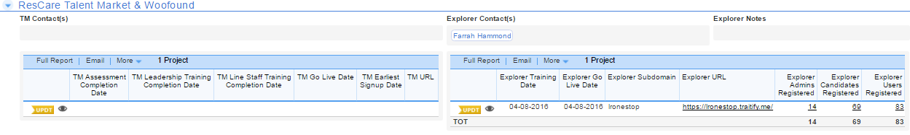

This section will track the usage of ResCare tools

ResCare Talent Market is an interactive employment tool that makes finding a job easier than ever before for your customers. By simply registering and uploading their work experience and skill sets, they can immediately begin receiving the most current local employment opportunities that are refreshed every night.
Woofound is a scientifically backed visual personality assessment designed to be completed in less than two minutes. This will help assess customer traits, personality, and ethics to explore career opportunities that match their lifestyle.
Created with the Personal Edition of HelpNDoc: Easily create CHM Help documents